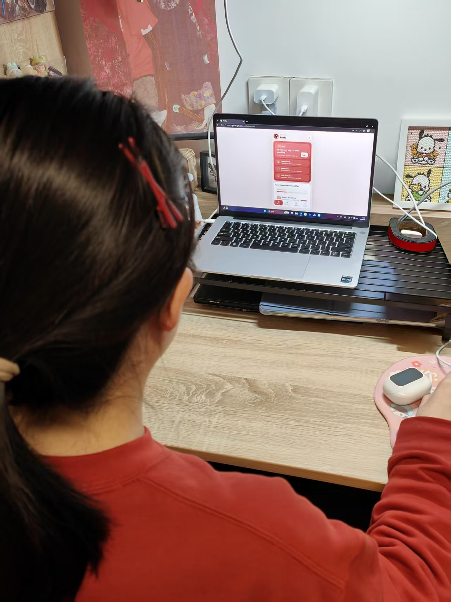
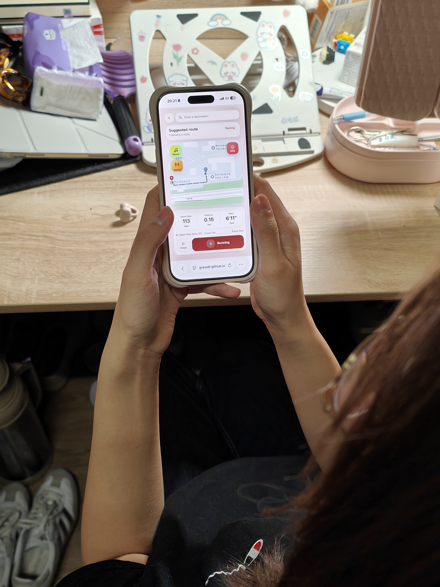
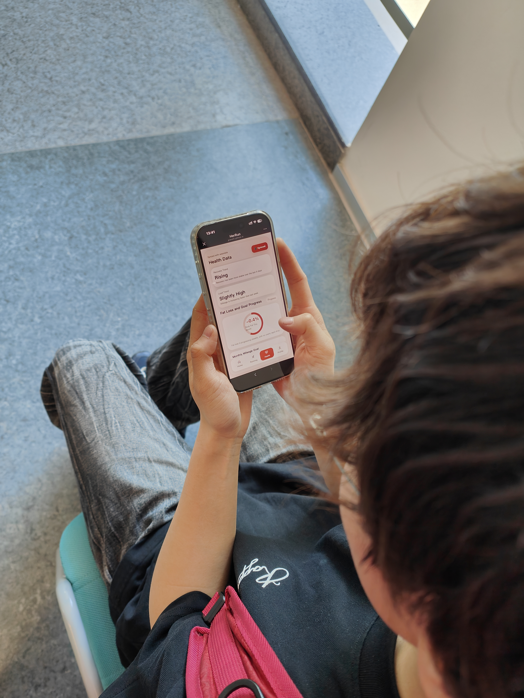

Testing outcomes, refinement decisions, and final reflection
This page brings the portfolio to a close by reserving space for usability testing results,
iterative design changes, and reflection on ethics, society, and AI-supported process work.
Usability Testing
Usability testing that informed product iteration
We invited three users to test an earlier HerRun prototype. Their feedback showed that mood support should be more closely connected with women’s body condition, confidence, and low-pressure running decisions. This directly informed our later iteration, including the addition of the Period Calendar feature.

User 1
Mood check-in and first-run confidence
“I like that the app starts from mood instead of pace, but I still want it to explain why a lighter run is recommended. If the suggestion connects to my body condition, I would trust it more.”
Design insight
Mood support should not stay as a separate emotional label. It needs to explain the reason behind low-pressure running suggestions.
Iteration outcome
This feedback led us to connect mood records with body-condition prompts and later add Period Calendar as part of the Home page guidance.

User 2
Low-pressure running decisions
“Sometimes I do not know whether I should run, slow down, or just walk. A running app should help me make that decision based on how I feel that day, not only on distance or calories.”
Design insight
Users need flexible intensity choices that make slowing down feel acceptable, rather than feeling like failure.
Iteration outcome
We refined the low-pressure running flow and added period-aware guidance so the system could suggest lighter plans when users may need more comfort.

User 3
Star Diary and long-term motivation
“The Star Diary is encouraging, but it would be more useful if the rewards were linked to real support, such as a gentler plan, comfort audio, or health-related reminders.”
Design insight
Gamification should not only reward activity. It should unlock supportive features that reduce pressure and help users maintain a healthier rhythm.
Iteration outcome
We connected Star Diary rewards with Running and Health modules, including low-pressure custom plans, comfort audio, and period-friendly running support.
From testing to iteration
User feedback revealed that mood-centred design needed a stronger connection with women’s physical condition and everyday running decisions. Based on this, we updated HerRun by adding Period Calendar, strengthening low-pressure running suggestions, and linking Star Diary rewards with practical Running and Health support.
Iterative Refinement
How HerRun evolved through three design stages
Drag the button along the timeline to explore how HerRun changed from a general running app into a women-centred, mood-aware running companion.
Drag the slider knob or tap a stage dot.
Final Reflection
Social implications, ethics, and AI-supported process notes
This section is designed for the final written reflection that closes the portfolio with broader insight.
HerRun’s final iteration shows that designing for women runners is not only about adding more features,
but about making running feel safer, gentler, and more personally meaningful.
Through usability testing, we realised that mood support should not remain as an isolated emotional label.
It needed to connect with women’s body condition, daily confidence, and the decisions users make before, during, and after running.
The project also helped us reflect on the balance between support and sensitivity.
Health-related and period-aware functions must be optional, private, and easy to control, rather than making users feel monitored.
Similarly, safety features such as temporary location sharing and emergency contacts should offer reassurance without creating unnecessary anxiety.
Overall, HerRun evolved from a general running app into a women-centred, mood-aware running companion focused on confidence, safety, personal rhythm, and long-term wellbeing.
REFERENCES & AI TOOL DISCLOSURE
[1] ChatGPT, accessed on 2026-05-03, available at https://chatgpt.com. Used for AI-assisted front-end scaffolding, CSS debugging, layout refinement, wording improvement, and generating implementation suggestions for the HerRun portfolio and web prototype. The generated outputs were manually reviewed, adapted, and verified against the group’s user requirements.